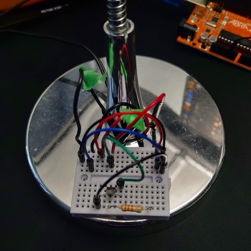

This is my Automated Lamp Bot
laziness 100

laziness 100
A simple LED lamp. Automated.
FYI: If you don't already know, you can click the images to be redirected to either code or a video.
I am very proud of this project, mostly because I find it to be the most useful, despite its simplicity.
I rewired the lamp to a separate transistor switch circuit. From there,
it connects one of my Raspberry Pis to a Discord Bot.
This was done on purpose in order to not have to port forward, and also
so that me and my friends could turn on and off the lamp whenever we
please.
The first image of the lamp bot, much of it was simply put together on a
small breadboard, but I was able to upgrade it to its own perfboard,
where it will either stay like that forever, or upgraded even further.
Who knows?